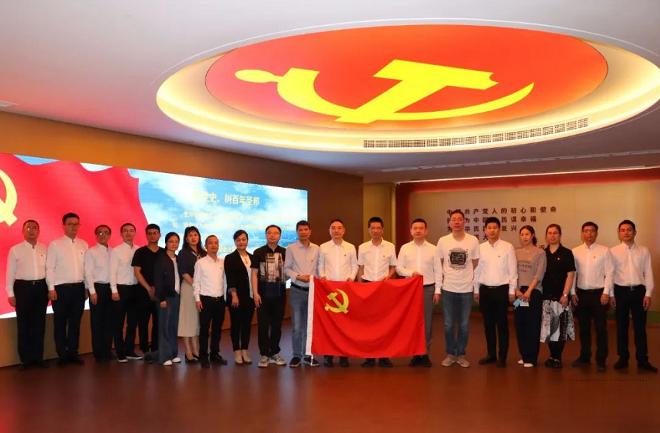
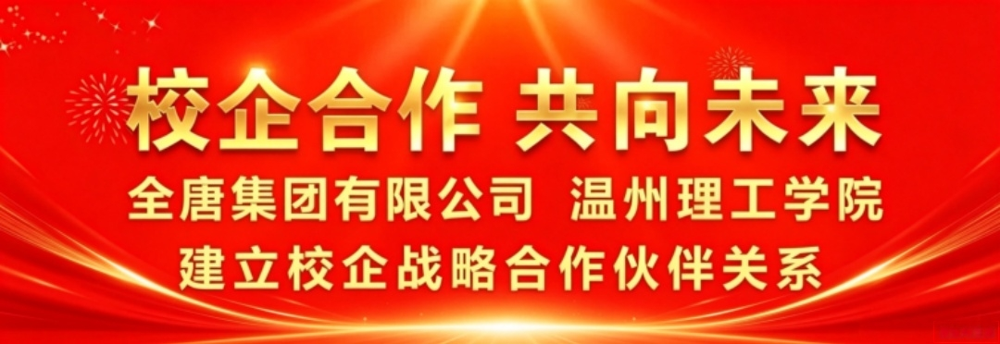
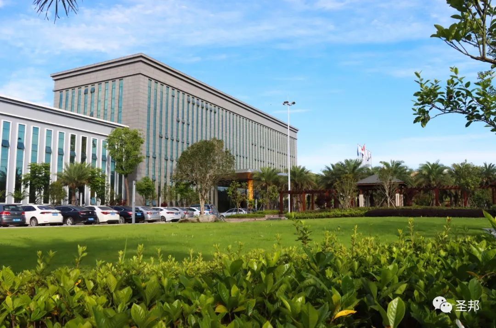
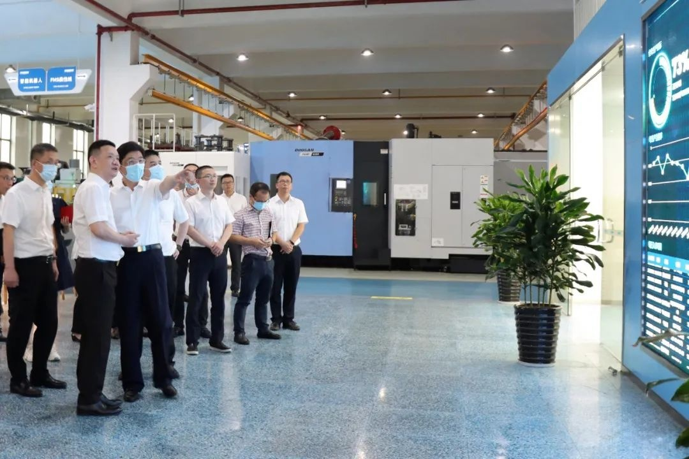
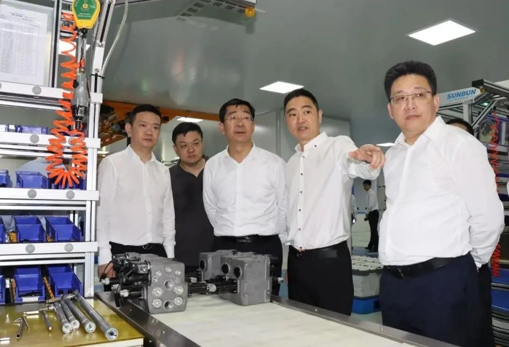
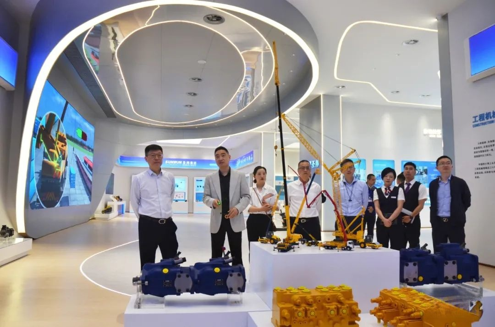
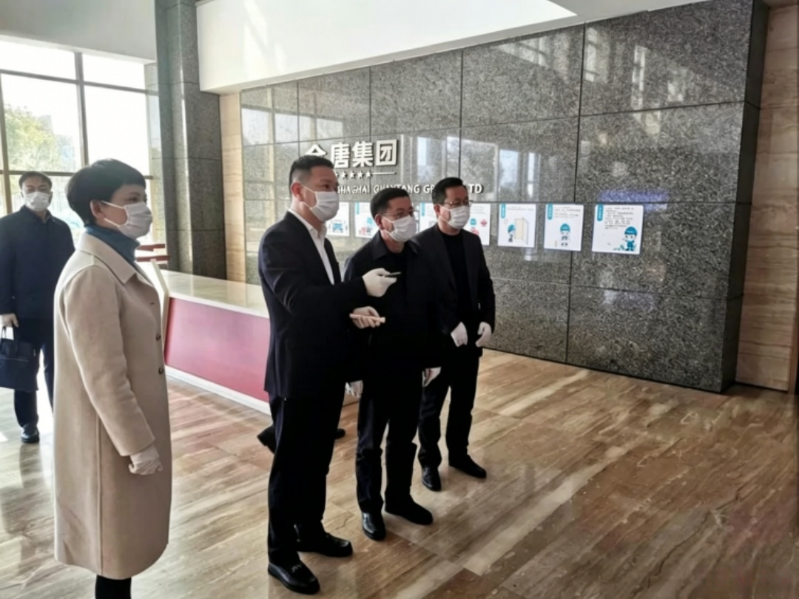

-

2022-04-14بناء تحالف طبي-مؤسسي، وبناء وطن متناغم معًابناء تحالف طبي-صناعي وبيت متناغم 13 أبريل، مجموعة KIWL المحدودة ومستشفى لونغوان رقم واحد...عرض التفاصيل + -

2022-03-18تعاون بين الجامعة والشركة نحو المستقبلتعاون بين الجامعة والمؤسسة نحو المستقبل 17 مارس، توصلت مجموعة KIWL ومعهد ونتشو التقني إلى تعاون استراتيجي...عرض التفاصيل + -

2022-02-12مجموعة KIWLحصلت على لقب وينtchou“أجمل مصنع”لقب الشرف!مجموعة KIWLحصلت على لقب وينtchou“أجمل مصنع”لقب الشرف! في 10 فبراير، إدارة الدعاية بلجنة ونتشو البلدية وبلدية ونتشو...عرض التفاصيل + -

2021-09-02زار نائب أمين لجنة الحزب وعمدة مدينة ونتشو ياو غاويوان ووفده مجموعة KIWL للاطلاع على استهلاك الطاقة“التحكم المزدوج”العملزار نائب أمين لجنة الحزب وعمدة مدينة ونتشو ياو غاويوان ووفده مجموعة KIWL للاطلاع على استهلاك الطاقة“التحكم المزدوج”العمل في سبتمبر...عرض التفاصيل + -
 2021-07-10تحالف بين البنوك والشركات لخلق مستقبل مشتركتحالف بين البنوك والمؤسسات لخلق مستقبل مشترك: مجموعة KIWL توقع اتفاقية تعاون استراتيجي مع فرع بنك الصين الصناعي والتجاري في ونتشو...عرض التفاصيل +
2021-07-10تحالف بين البنوك والشركات لخلق مستقبل مشتركتحالف بين البنوك والمؤسسات لخلق مستقبل مشترك: مجموعة KIWL توقع اتفاقية تعاون استراتيجي مع فرع بنك الصين الصناعي والتجاري في ونتشو...عرض التفاصيل + -

2021-05-14دعم التصنيع الذكي للمؤسسات، والعمل معًا لازدهار الصناعةدعم التصنيع الذكي للمؤسسات والازدهار الصناعي المشترك 13 مايو، نائب رئيس بلدية شوتشو تشانغ كه...عرض التفاصيل + -

2021-05-08تعاون البنوك والمؤسسات يعزز التنمية، والعمل معًا لتحقيق المنفعة المشتركة وبناء المستقبليعزز التعاون بين البنوك والمؤسسات التنمية والفوز المشترك لخلق المستقبل: في بعد ظهر 7 مايو، فرع بنك الصين الصناعي والتجاري في مدينة ونتشو هو...عرض التفاصيل + -

2020-03-01زار هو ويغوو، أمين لجنة الحزب في منطقة جينشان بمدينة شنغهاي، شركة KIWL في شنغهاي للاطلاع على جهود الوقاية من الوباء واستئناف الإنتاجزار هو ويغوو، أمين لجنة الحزب في منطقة جينشان بمدينة شنغهاي، شركة KIWL في شنغهاي للاطلاع على جهود الوقاية من الوباء واستئناف الإنتاج ...عرض التفاصيل + -
2020-02-21زار الأمين تشن وي جون، أمين لجنة الحزب في مدينة ونتشو، شركة KIWL للإشراف على استئناف الإنتاجزار أمين لجنة الحزب في مدينة ونتشو تشن ويجون KIWL للإشراف على استئناف الإنتاج 20 فبراير بعد الظهر، اللجنة البلدية في ونتشو...عرض التفاصيل +
-
 2020-02-14زار رئيس المؤتمر الاستشاري السياسي لمدينة ونتشو تشن زورونغ شركة KIWL للإشراف على إجراءات الوقاية عند استئناف الإنتاجبعد ظهر 20 فبراير، زار الأمين تشن ويجون KIWL للإشراف على استئناف الإنتاج. اللجنة البلدية في ونتشو...عرض التفاصيل +
2020-02-14زار رئيس المؤتمر الاستشاري السياسي لمدينة ونتشو تشن زورونغ شركة KIWL للإشراف على إجراءات الوقاية عند استئناف الإنتاجبعد ظهر 20 فبراير، زار الأمين تشن ويجون KIWL للإشراف على استئناف الإنتاج. اللجنة البلدية في ونتشو...عرض التفاصيل +
الأخبار البارزة
- تحضر مجموعة تشيوان تانغ معرض PLASTEX 2026 في مصر
2026-01-15
- رحلة مايو إلى الخارج | تحضر مجموعة تشيوان تانغ معرض السعودية للبلاستيك والمطاط والبتروكيماويات
2025-05-16
- الافتتاح | تحضر مجموعة تشيوان تانغ معرض CHINAPLAS 2025 الدولي للمطاط والبلاستيك
2025-04-15
- استعراض مميز | تحضر مجموعة تشيوان تانغ الدورة الخامسة عشرة لمعرض صناعة البلاستيك في الصين (تشنغتشو)
2025-03-05
- معرض ختام العام | تحضر مجموعة تشيوان تانغ معرض Plast Eurasia Istanbul 2024 في تركيا
2024-12-09
- تحضر مجموعة تشيوان تانغ الدورة الحادية والعشرين لمعرض بلاستيك تشجيانغ (تايتشو) للتجارة
2024-10-23
- تحضر مجموعة تشيوان تانغ معرض إيران الدولي للبلاستيك 2024
2024-09-12
- إطلاق جديد | تحضر مجموعة تشيوان تانغ بآلة حقن SE الكهربائية بالكامل معرض CHINAPLAS 2024 الدولي للمطاط والبلاستيك
2024-04-27
- تحضر مجموعة تشيوان تانغ الدورة الرابعة عشرة لمعرض صناعة البلاستيك في الصين (تشنغتشو)
2024-03-27
- تحضر مجموعة تشيوان تانغ الدورة الحادية والثلاثين للمعرض الدولي للصناعة في الصين (وينتشو)
2024-03-11


واتساب

امسح الرمز
لتابعنا